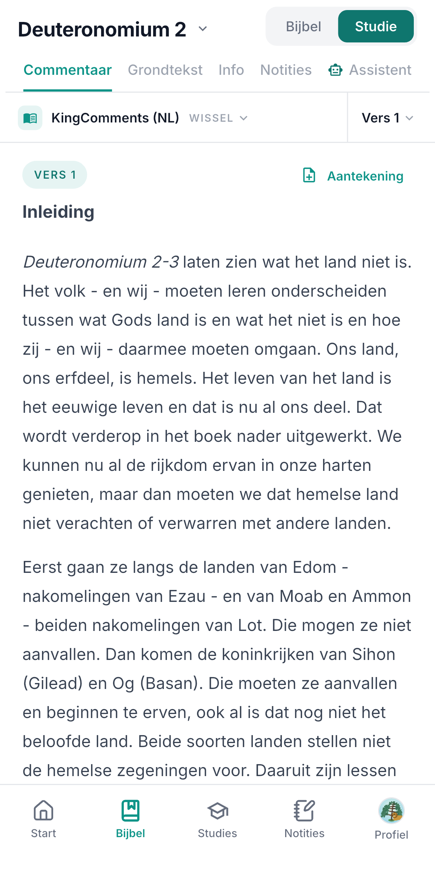
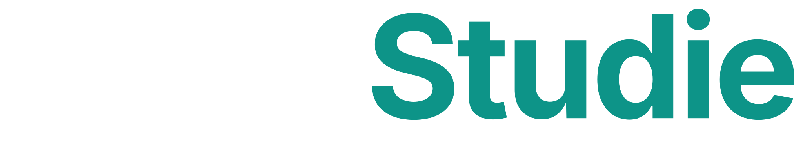

De Bijbel lezen
is makkelijk.
Begrijpen niet.
Uitleg naast
elk hoofdstuk.
elk hoofdstuk.


Begrijp wat je leest.
Uitleg, context en grondtekst
naast elk hoofdstuk.
naast elk hoofdstuk.
Download gratis
Ook op bijbelstudie.io